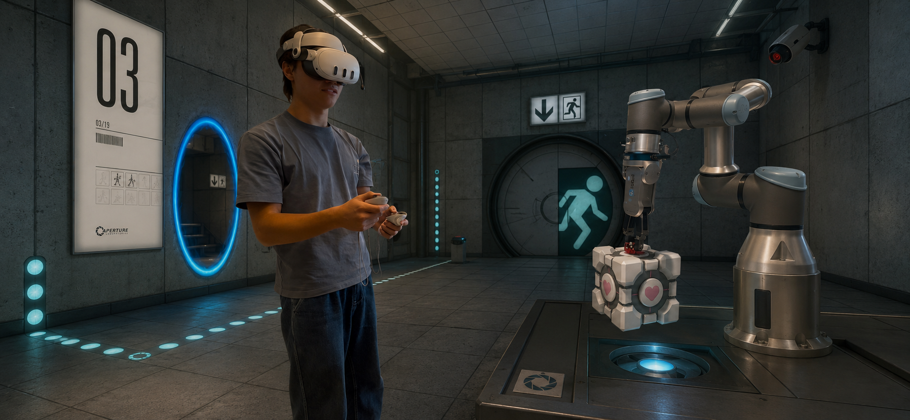
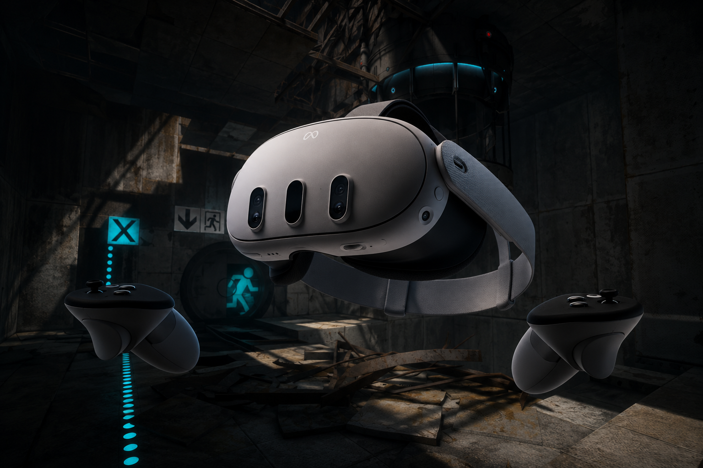

HoloAssist-AI — Simulation
Three simulation environments: Gazebo Ignition Fortress (Ollie Lau + John Chen), MuJoCo (John Chen), and NVIDIA Isaac Sim 5.1 (Sebastian Baudille). Each serves a different role in the training pipeline.
Gazebo — Ollie Lau & John Chen
The Gazebo simulation was bootstrapped by Ollie Lau (Gazebo Classic, UR3e + table, initial PPO scripts, safety layer) and extended by John Chen (ported to Ignition Fortress, Moveit2 collision avoidance, cube randomization, parallel IGN_PARTITION isolation, OnRobot RG2 integration). After handoff, Ollie owns the Gazebo sim and MoveIt2 subsystem.
/camera/points for the perception pipelineIGN_PARTITION environment variableThe ur3e_safety_layer package enforces max_delta_rad = 0.24 rad/step (75% of UR3e max speed at control_dt=0.1s) and publishes a collision flag from MoveIt2. The safety node monitors TCP pose and joint states, stopping the arm if a violation is detected.


MuJoCo — John Chen
John built a MuJoCo MJCF environment that exactly mirrors the Gazebo scene but runs on CPU at ~1500 steps/s with no ROS dependency. This is used for fast reward shaping and staged policy design before committing expensive GPU training runs in Isaac Sim.
gripper_closed boolean — no physics actuation needed for RLTABLE_TOP_Z constant shared with Gazebo envIsaac Sim — Sebastian Baudille
The validated combination that works:
| Component | Value |
|---|---|
| GPU | NVIDIA RTX 4070 Ti SUPER (16 GB, Ada Lovelace) |
| NVIDIA Driver | 580.88 (do NOT use 595.xx) |
| Isaac Sim | 5.1.0 Workstation Installer at C:\isaacsim |
| Isaac Lab | main branch (targets Isaac Sim 5.1) |
| Python | 3.11 (Isaac Sim bundled) |
| RL Framework | RSL-RL 5.0.1 |
| OS | Windows 11 Pro, 25H2 |
tensordict==0.7.2 and h5py==3.11.0 must be force-installed after any isaaclab.bat --install run. Newer versions crash on Windows with Isaac Sim 5.1's PyTorch 2.7.0 ABI.
Assets
The UR3e + RG2 robot is modelled as a layered USD asset:
prepare_urdf.py strips mimic joints and rewrites mesh URIs for Isaac Sim import. The resulting URDF is imported into USD via the Isaac Sim asset converter.
Environment
The reach task uses Isaac Lab's DirectRLEnv API with modular strategy pattern:
| Metric | Gazebo (old) | Isaac Lab (current) |
|---|---|---|
| Parallel envs | 4 (CPU-bound) | 4096 (GPU-vectorised) |
| Throughput | ~hundreds steps/s | 50k+ steps/s |
| 200k-step run | ~30 min | < 1 min |
| ROS in loop | Yes | No — pure GPU tensors |
| Domain randomisation | Manual | Built-in |
| Gripper modelling | Fixed-open hack | Articulated 7-DOF |